|
|
|
BOYKESİT ŞABLONLARI KATALOĞU
|
Aşağıda, karayolu boykesitlerinin (profillerinin) çizimi için mevcut olan farklı şablon tipleri açıklanmaktadır. BOYKESİT ŞABLONU Colores.gui Colores.gui şablonu seçildiğinde, boykesit varsayılan olarak aşağıdaki görünümde çizilecektir. 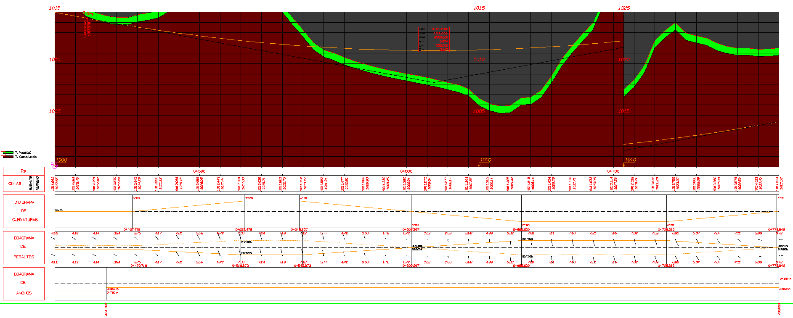 Colores.gui şablonunda yer alan veriler şunlardır:
BOYKESİT ŞABLONU DiagMasC.gui DiagMasC.gui şablonu seçildiğinde, boykesit varsayılan olarak aşağıdaki görünümde çizilecektir. 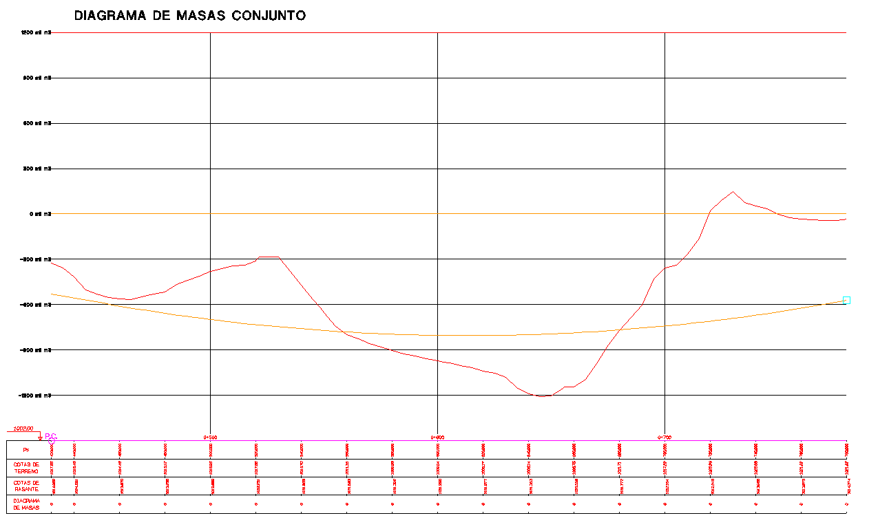 DiagMasC.gui şablonunda yer alan veriler şunlardır:
BOYKESİT ŞABLONU DiagMasS.gui DiagMasS.gui şablonu seçildiğinde, boykesit varsayılan olarak aşağıdaki görünümde çizilecektir. 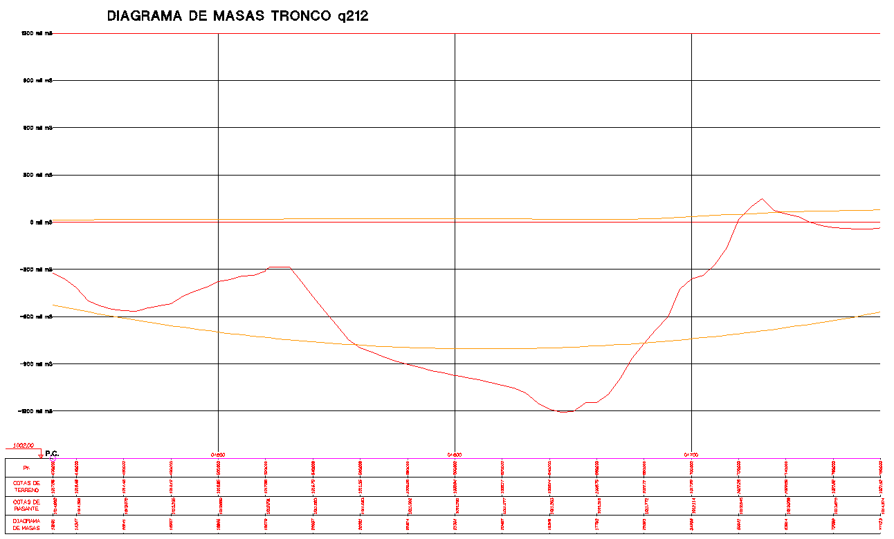 DiagMasS.gui şablonunda yer alan veriler şunlardır:
BOYKESİT ŞABLONU DiagVel.gui DiagVel.gui şablonu seçildiğinde, boykesit varsayılan olarak aşağıdaki görünümde çizilecektir. 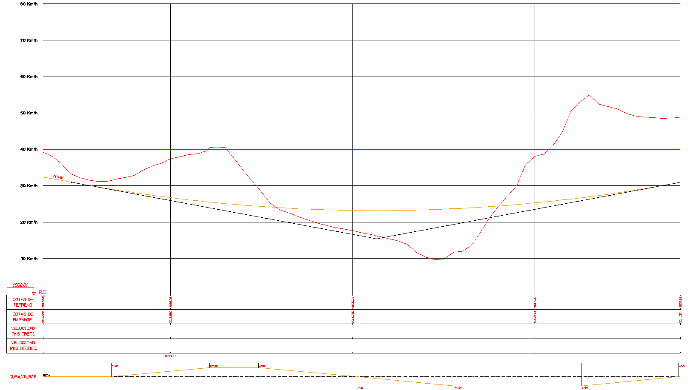 DiagVel.gui şablonunda yer alan veriler şunlardır:
BOYKESİT ŞABLONU DobleRas.gui DobleRas.gui şablonu seçildiğinde, boykesit varsayılan olarak aşağıdaki görünümde çizilecektir. 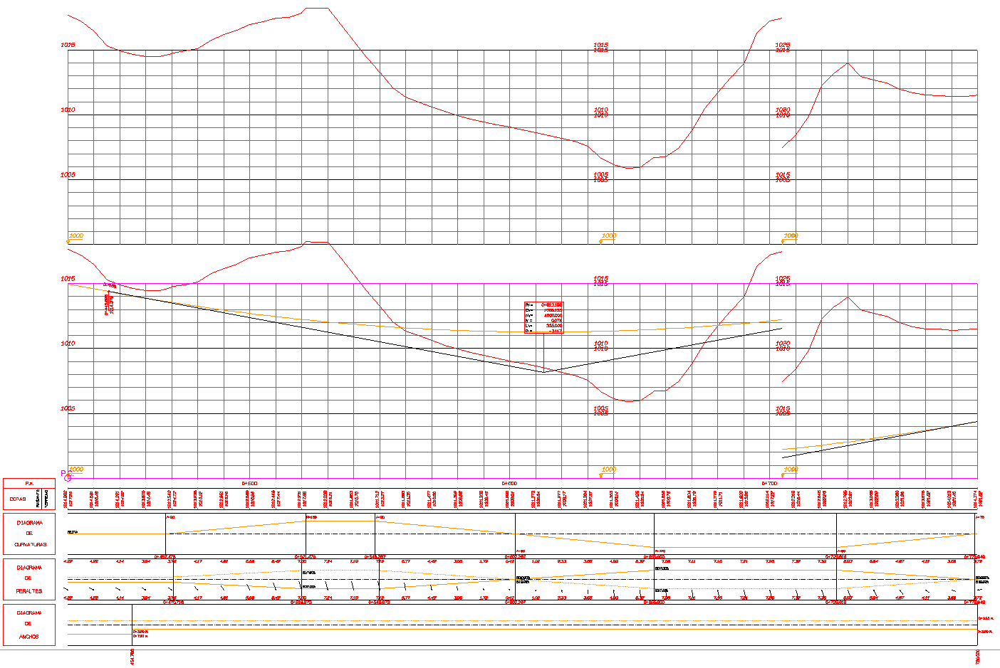 DobleRas.gui şablonunda yer alan veriler şunlardır:
BOYKESİT ŞABLONU ESTRUC.gui ESTRUC.gui şablonu seçildiğinde, boykesit varsayılan olarak aşağıdaki görünümde çizilecektir. 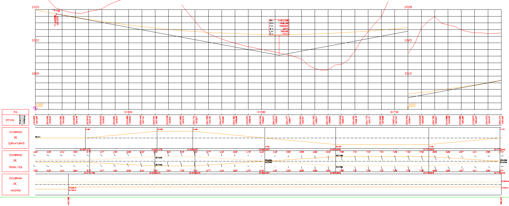 ESTRUC.gui şablonunda yer alan veriler şunlardır:
BOYKESİT ŞABLONU GIASA1_d.gui GIASA1_d.gui şablonu seçildiğinde, boykesit varsayılan olarak aşağıdaki görünümde çizilecektir. 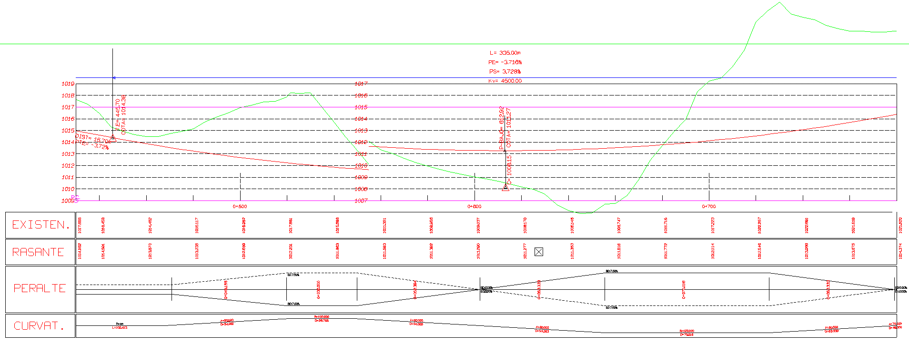 GIASA1_d.gui şablonunda yer alan veriler şunlardır:
BOYKESİT ŞABLONU GIASA1_I.gui GIASA1_I.gui şablonu seçildiğinde, boykesit varsayılan olarak aşağıdaki görünümde çizilecektir. 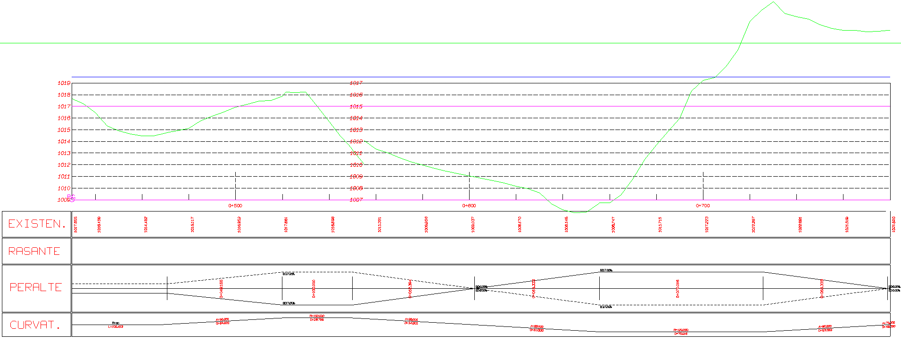 GIASA1_I.gui şablonunda yer alan veriler şunlardır:
BOYKESİT ŞABLONU GIF01.gui GIF01.gui şablonu seçildiğinde, boykesit varsayılan olarak aşağıdaki görünümde çizilecektir. 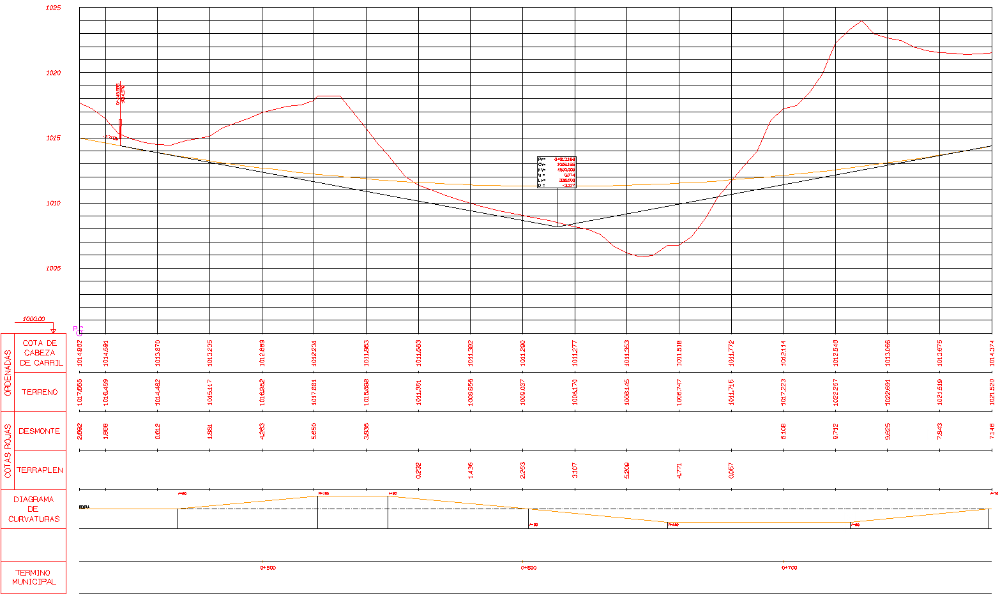 GIF01.gui şablonunda yer alan veriler şunlardır:
BOYKESİT ŞABLONU ISOF1.gui ISOF1.gui şablonu seçildiğinde, boykesit varsayılan olarak aşağıdaki görünümde çizilecektir. 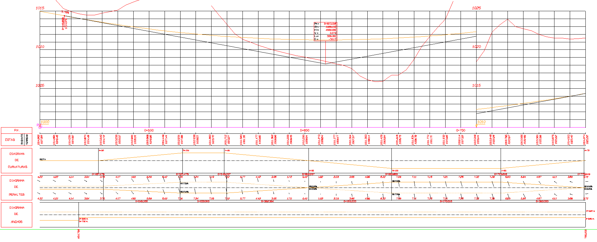 ISOF1.gui şablonunda yer alan veriler şunlardır:
BOYKESİT ŞABLONU ISOF2.gui ISOF2.gui şablonu seçildiğinde, boykesit varsayılan olarak aşağıdaki görünümde çizilecektir. 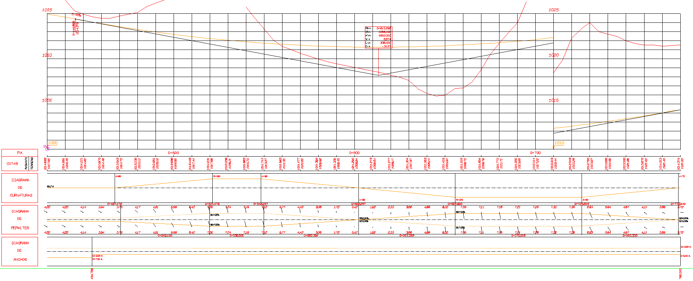 ISOF2.gui şablonunda yer alan veriler şunlardır:
BOYKESİT ŞABLONU ISP01.gui ISP01.gui şablonu seçildiğinde, boykesit varsayılan olarak aşağıdaki görünümde çizilecektir. ISP01.gui şablonunda yer alan veriler şunlardır:
BOYKESİT ŞABLONU ISP01b.gui ISP01b.gui şablonu seçildiğinde, boykesit varsayılan olarak aşağıdaki görünümde çizilecektir. 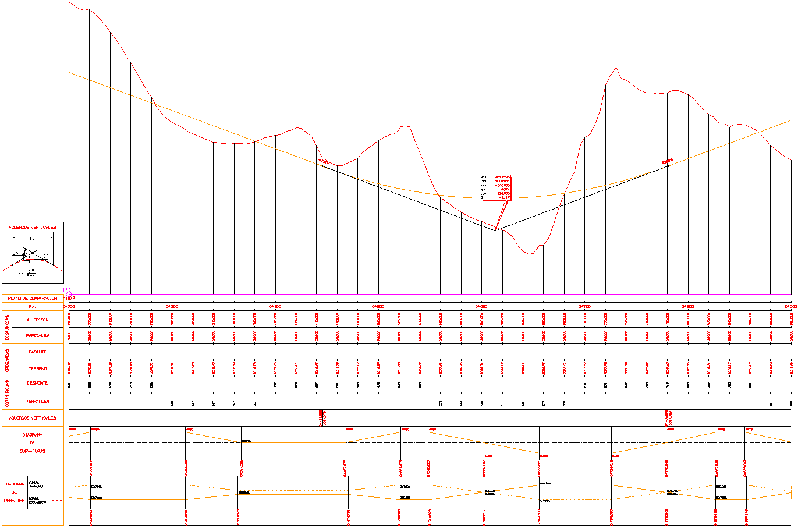 ISP01b.gui şablonunda yer alan veriler şunlardır:
BOYKESİT ŞABLONU ISP02.gui ISP02.gui şablonu seçildiğinde, boykesit varsayılan olarak aşağıdaki görünümde çizilecektir. 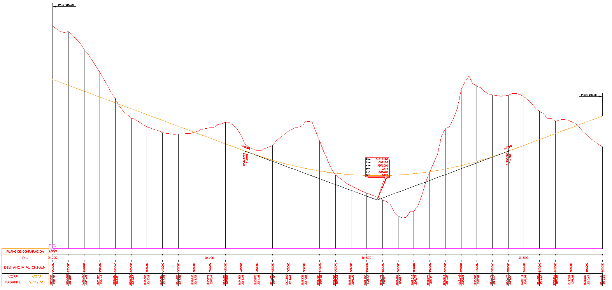 ISP02.gui şablonunda yer alan veriler şunlardır:
BOYKESİT ŞABLONU ISP02b.gui ISP02b.gui şablonu seçildiğinde, boykesit varsayılan olarak aşağıdaki görünümde çizilecektir. 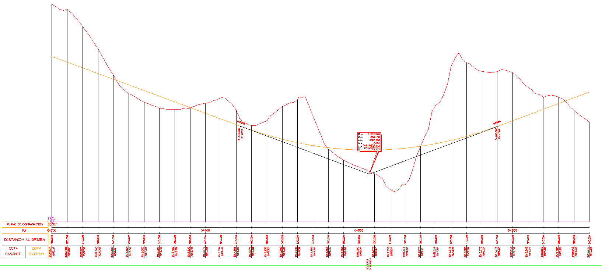 ISP02b.gui şablonunda yer alan veriler şunlardır:
BOYKESİT ŞABLONU ISP03.gui ISP03.gui şablonu seçildiğinde, boykesit varsayılan olarak aşağıdaki görünümde çizilecektir. 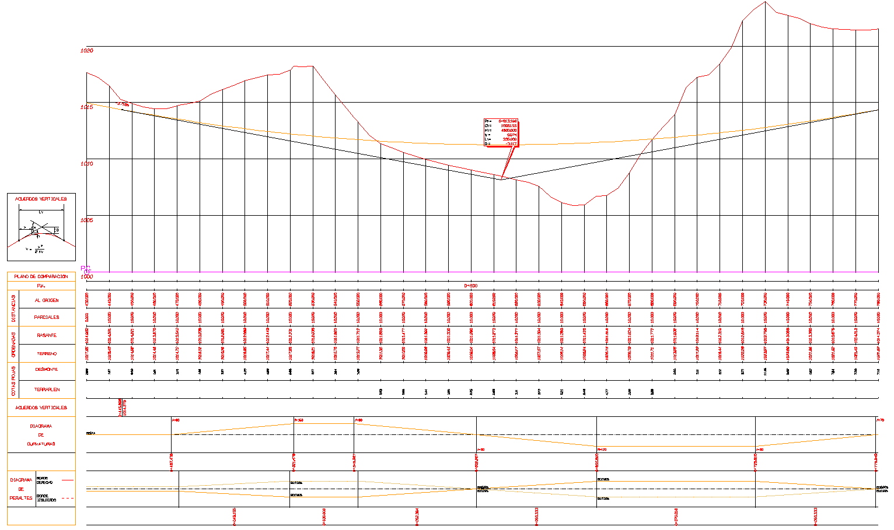 ISP03.gui şablonunda yer alan veriler şunlardır:
BOYKESİT ŞABLONU ISP04.gui ISP04.gui şablonu seçildiğinde, boykesit varsayılan olarak aşağıdaki görünümde çizilecektir.  ISP04.gui şablonunda yer alan veriler şunlardır:
BOYKESİT ŞABLONU ISP05.gui ISP05.gui şablonu seçildiğinde, boykesit varsayılan olarak aşağıdaki görünümde çizilecektir. 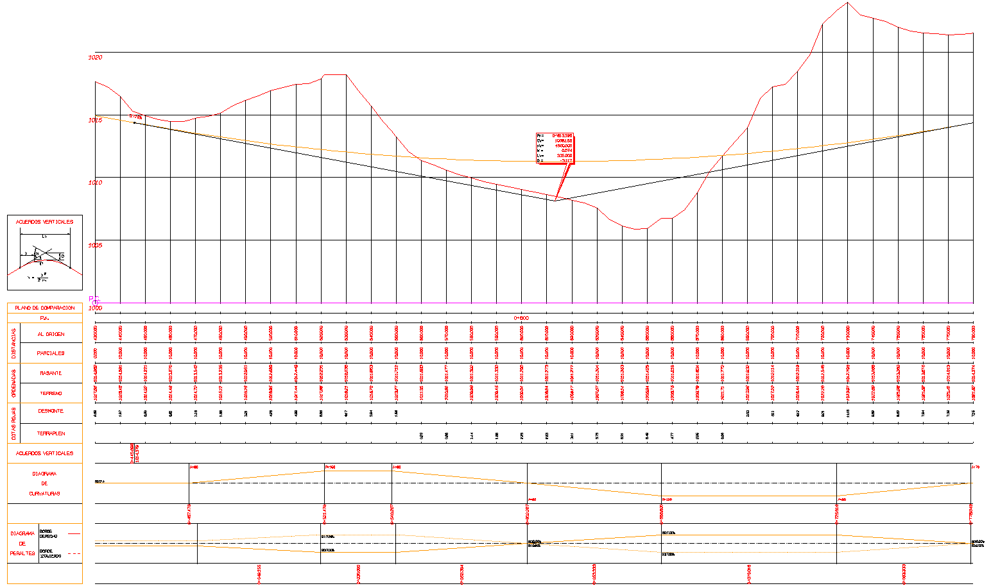 ISP05.gui şablonunda yer alan veriler şunlardır:
BOYKESİT ŞABLONU ISP06.gui ISP06.gui şablonu seçildiğinde, boykesit varsayılan olarak aşağıdaki görünümde çizilecektir. 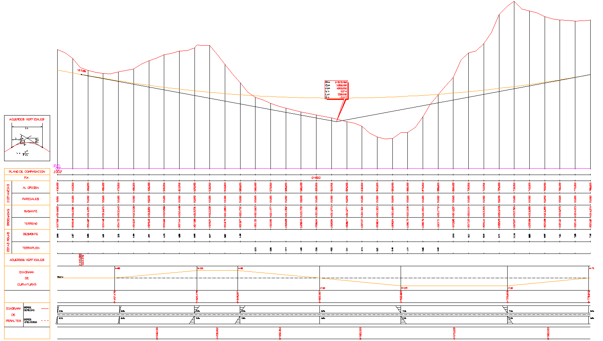 ISP06.gui şablonunda yer alan veriler şunlardır:
BOYKESİT ŞABLONU ISP06_T.gui ISP06_T.gui şablonu seçildiğinde, boykesit varsayılan olarak aşağıdaki görünümde çizilecektir. 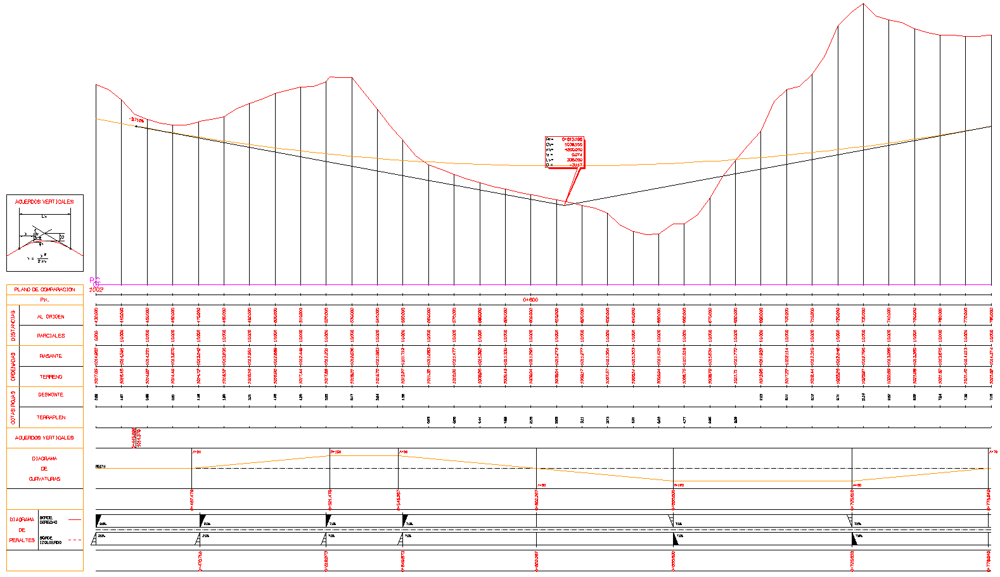 ISP06_T.gui şablonunda yer alan veriler şunlardır:
BOYKESİT ŞABLONU ISP07.gui ISP07.gui şablonu seçildiğinde, boykesit varsayılan olarak aşağıdaki görünümde çizilecektir. 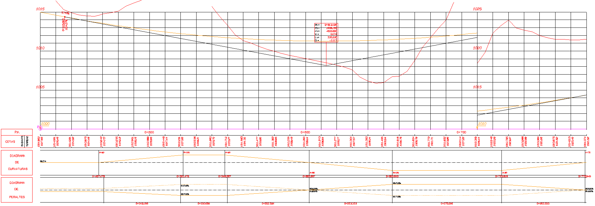 ISP07.gui şablonunda yer alan veriler şunlardır:
BOYKESİT ŞABLONU ISP07d.gui ISP07d.gui şablonu seçildiğinde, boykesit varsayılan olarak aşağıdaki görünümde çizilecektir. 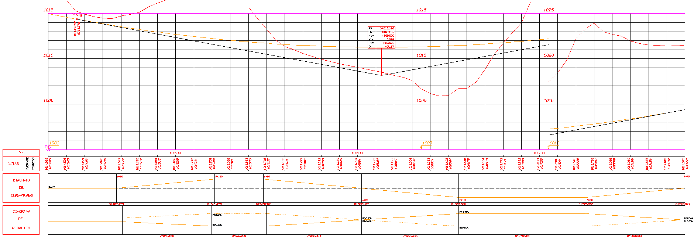 ISP07d.gui şablonunda yer alan veriler şunlardır:
BOYKESİT ŞABLONU ISP07i.gui ISP07i.gui şablonu seçildiğinde, boykesit varsayılan olarak aşağıdaki görünümde çizilecektir. 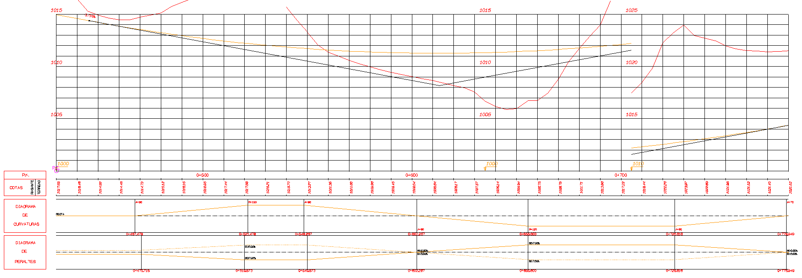 ISP07i.gui şablonunda yer alan veriler şunlardır:
BOYKESİT ŞABLONU ISP07m.gui ISP07m.gui şablonu seçildiğinde, boykesit varsayılan olarak aşağıdaki görünümde çizilecektir. 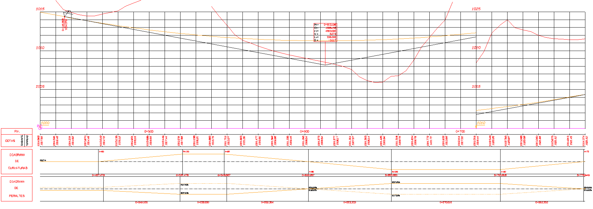 ISP07m.gui şablonunda yer alan veriler şunlardır:
BOYKESİT ŞABLONU ISP08.gui ISP08.gui şablonu seçildiğinde, boykesit varsayılan olarak aşağıdaki görünümde çizilecektir.  ISP08.gui şablonunda yer alan veriler şunlardır:
BOYKESİT ŞABLONU ISP08b.GUI ISP08b.gui şablonu seçildiğinde, boykesit varsayılan olarak aşağıdaki görünümde çizilecektir. 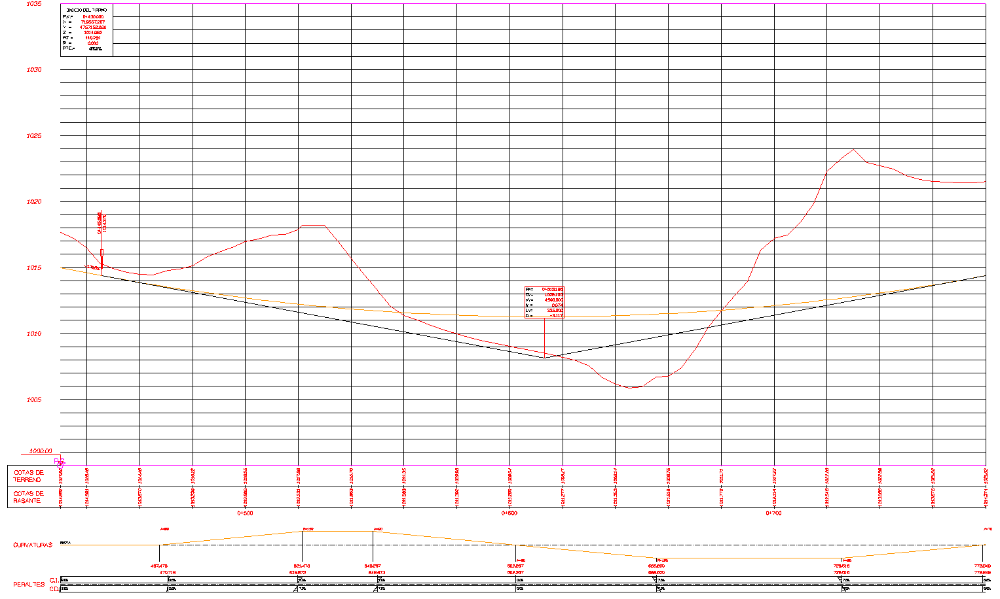 ISP08b.gui şablonunda yer alan veriler şunlardır:
BOYKESİT ŞABLONU ISP08C.gui ISP08C.gui şablonu seçildiğinde, boykesit varsayılan olarak aşağıdaki görünümde çizilecektir. 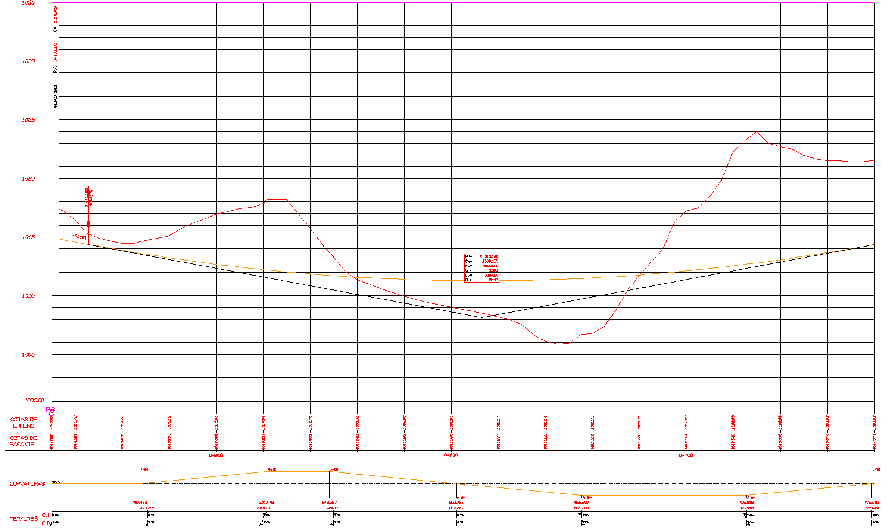 ISP08C.gui şablonunda yer alan veriler şunlardır:
BOYKESİT ŞABLONU ISP08T.gui ISP08T.gui şablonu seçildiğinde, boykesit varsayılan olarak aşağıdaki görünümde çizilecektir. 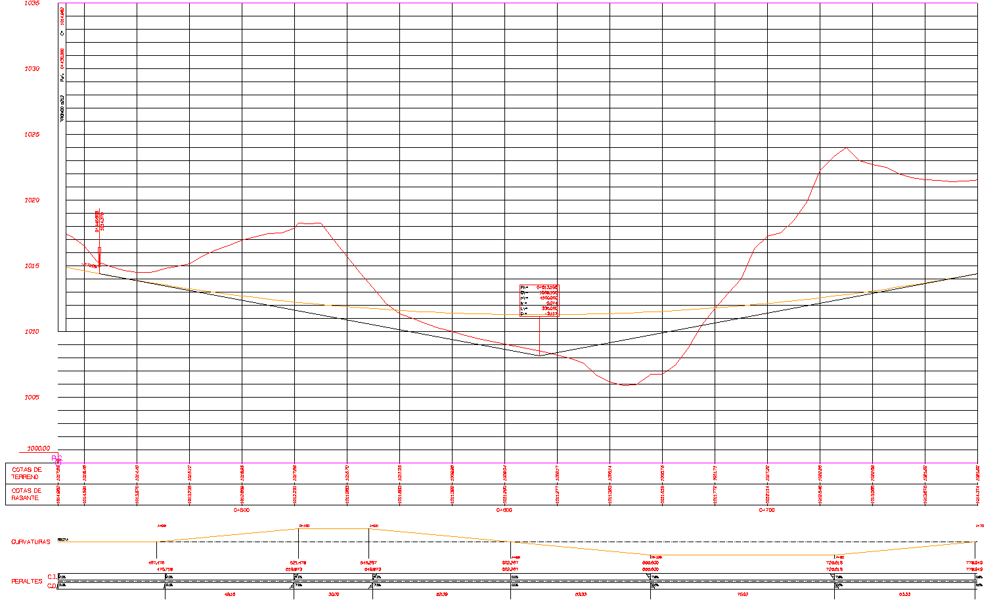 ISP08T.gui şablonunda yer alan veriler şunlardır:
BOYKESİT ŞABLONU ISP09.gui ISP09.gui şablonu seçildiğinde, boykesit varsayılan olarak aşağıdaki görünümde çizilecektir. 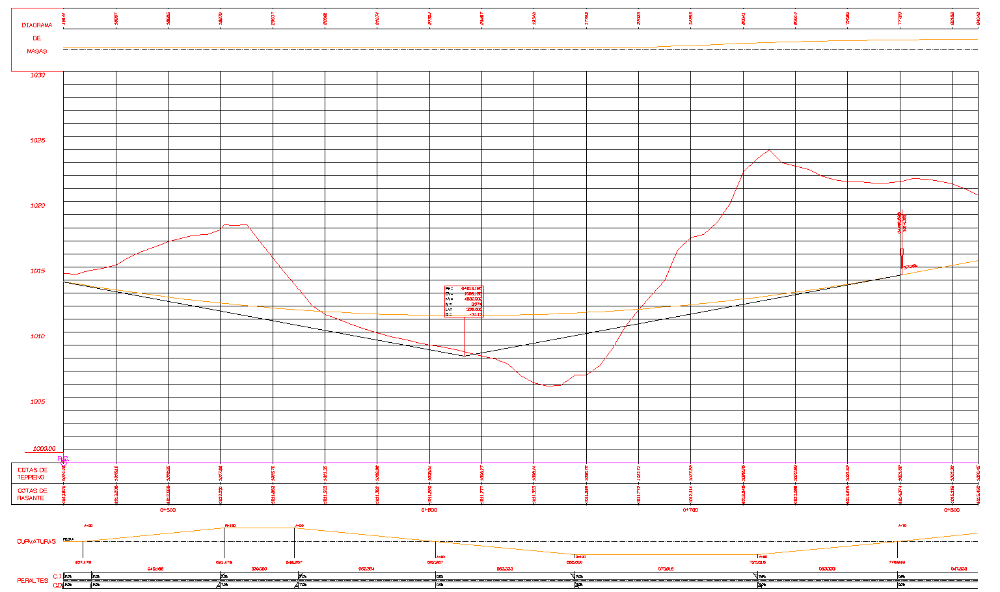 ISP09.gui şablonunda yer alan veriler şunlardır:
BOYKESİT ŞABLONU ISP11.gui ISP11.gui şablonu seçildiğinde, boykesit varsayılan olarak aşağıdaki görünümde çizilecektir. 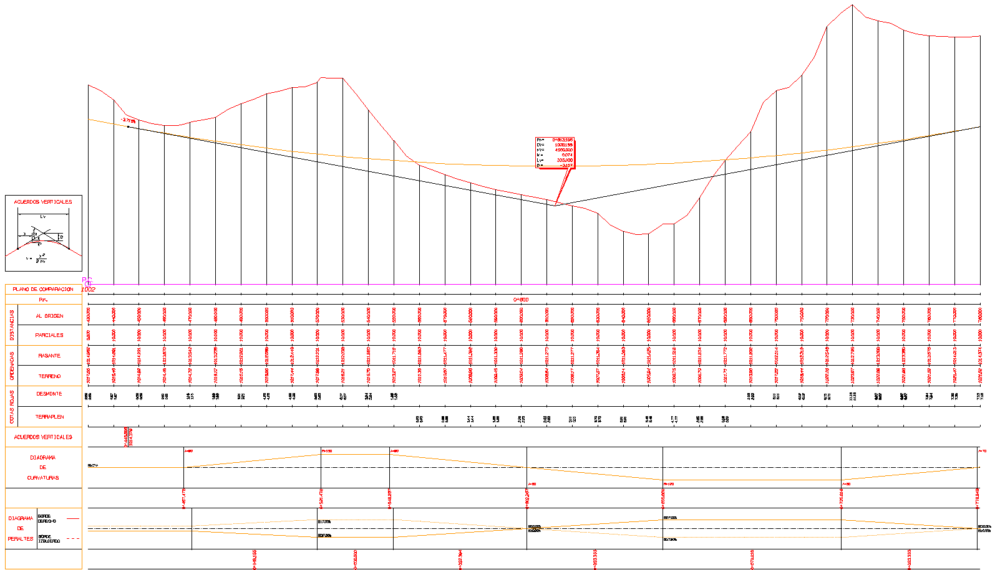 ISP11.gui şablonunda yer alan veriler şunlardır:
BOYKESİT ŞABLONU ISP12.gui ISP12.gui şablonu seçildiğinde, boykesit varsayılan olarak aşağıdaki görünümde çizilecektir. 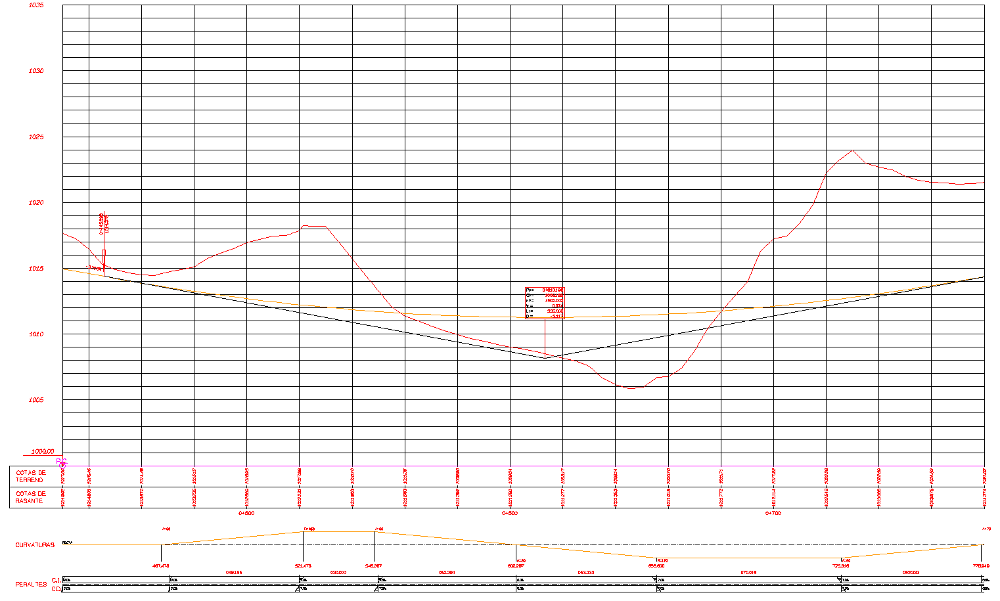 ISP12.gui şablonunda yer alan veriler şunlardır:
BOYKESİT ŞABLONU ISP14.gui ISP14.gui şablonu seçildiğinde, boykesit varsayılan olarak aşağıdaki görünümde çizilecektir. ISP14.gui şablonunda yer alan veriler şunlardır:
BOYKESİT ŞABLONU ISP15.gui ISP15.gui şablonu seçildiğinde, boykesit varsayılan olarak aşağıdaki görünümde çizilecektir. 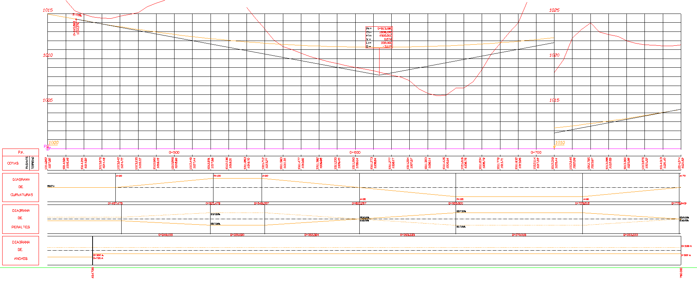 ISP15.gui şablonunda yer alan veriler şunlardır:
BOYKESİT ŞABLONU ISP15p.gui ISP15p.gui şablonu seçildiğinde, boykesit varsayılan olarak aşağıdaki görünümde çizilecektir. 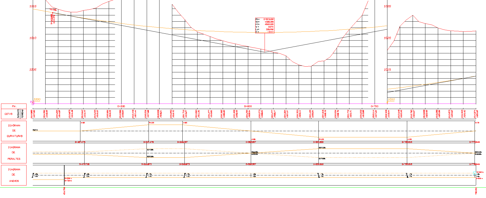 ISP15p.gui şablonunda yer alan veriler şunlardır:
ISP16.gui şablonu seçildiğinde, boykesit varsayılan olarak aşağıdaki görünümde çizilecektir. 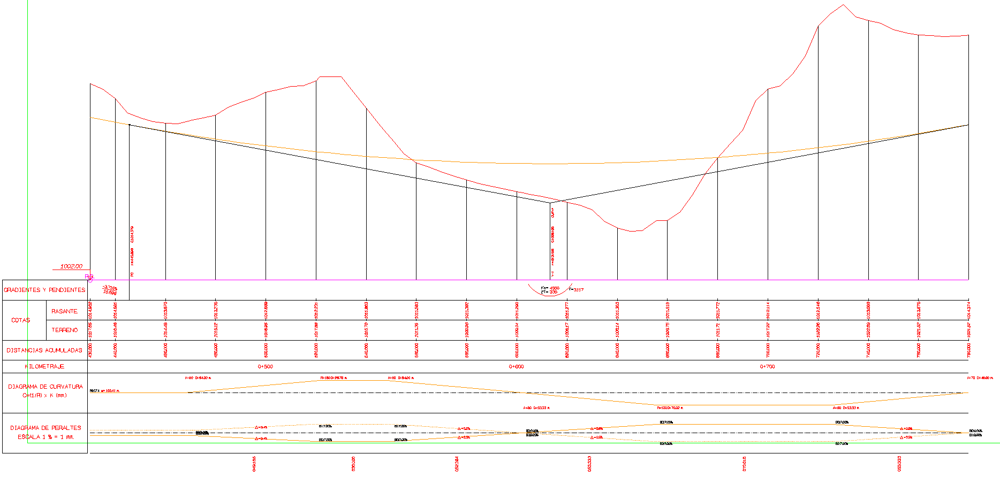 ISP16.gui şablonunda yer alan veriler şunlardır:
ISP16b.gui şablonu seçildiğinde, boykesit varsayılan olarak aşağıdaki görünümde çizilecektir. 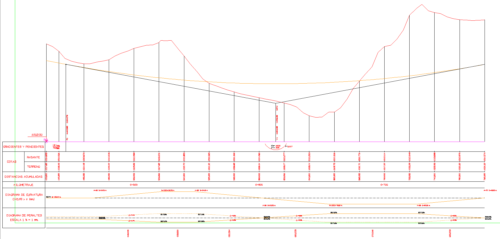 ISP16b.gui şablonunda yer alan veriler şunlardır:
BOYKESİT ŞABLONU ISP17.gui ISP17.gui şablonu seçildiğinde, boykesit varsayılan olarak aşağıdaki görünümde çizilecektir. 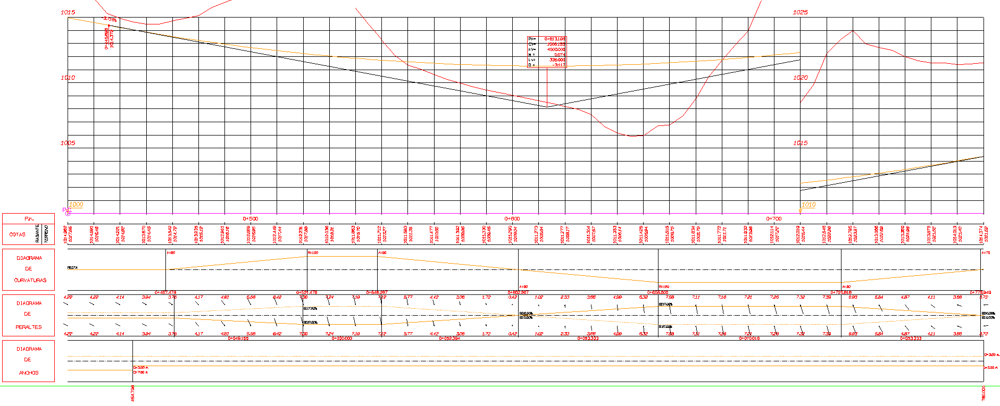 ISP17.gui şablonunda yer alan veriler şunlardır:
BOYKESİT ŞABLONU ISP17b.gui ISP17b.gui şablonu seçildiğinde, boykesit varsayılan olarak aşağıdaki görünümde çizilecektir. ISP17b.gui şablonunda yer alan veriler şunlardır:
BOYKESİT ŞABLONU ISP18.gui ISP18.gui şablonu seçildiğinde, boykesit varsayılan olarak aşağıdaki görünümde çizilecektir. 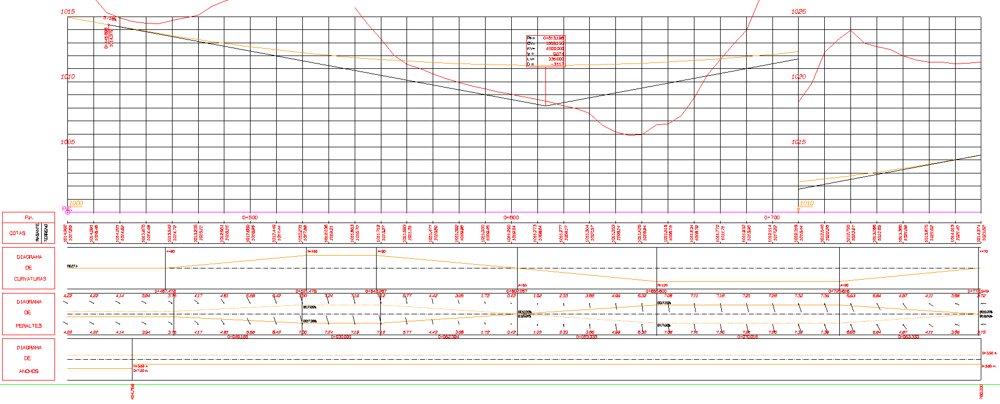 ISP18.gui şablonunda yer alan veriler şunlardır:
BOYKESİT ŞABLONU ISP18c.gui ISP18c.gui şablonu seçildiğinde, boykesit varsayılan olarak aşağıdaki görünümde çizilecektir. 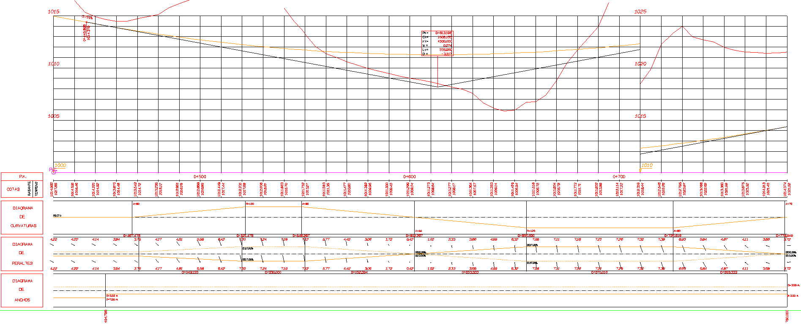 ISP18c.gui şablonunda yer alan veriler şunlardır:
BOYKESİT ŞABLONU ISP19.gui ISP19.gui şablonu seçildiğinde, boykesit varsayılan olarak aşağıdaki görünümde çizilecektir.  ISP19.gui şablonunda yer alan veriler şunlardır:
BOYKESİT ŞABLONU ISP20.gui ISP20.gui şablonu seçildiğinde, boykesit varsayılan olarak aşağıdaki görünümde çizilecektir. 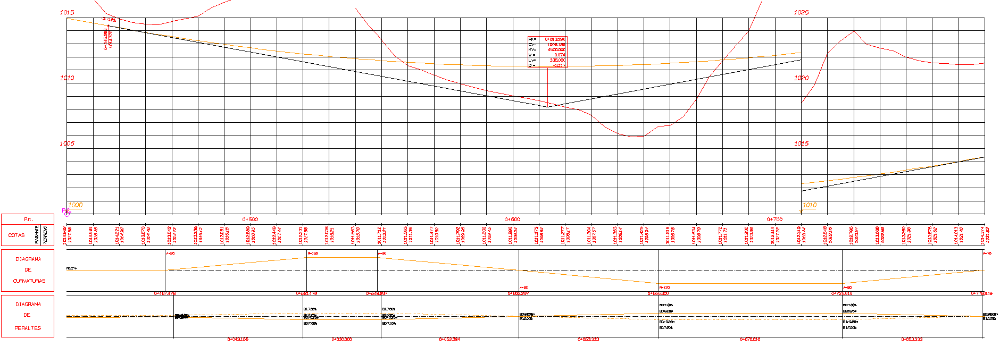 ISP20.gui şablonunda yer alan veriler şunlardır:
BOYKESİT ŞABLONU ISP21.gui ISP21.gui şablonu seçildiğinde, boykesit varsayılan olarak aşağıdaki görünümde çizilecektir. 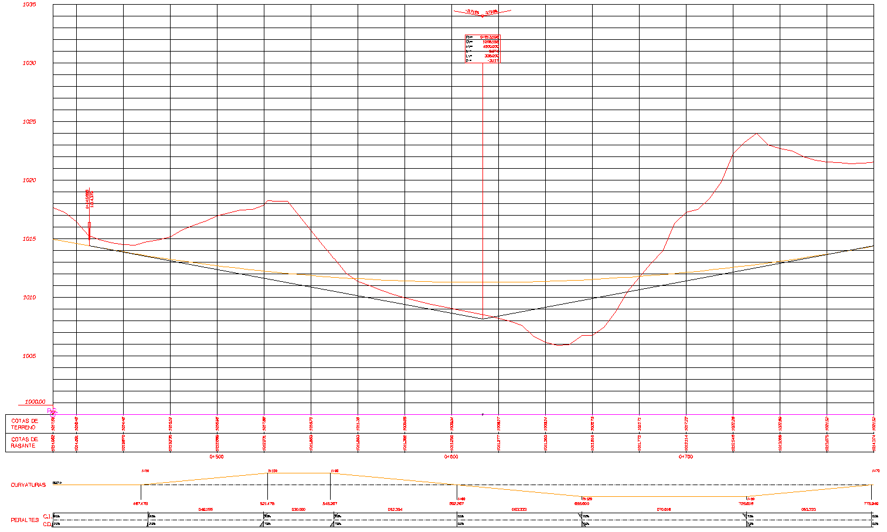 ISP21.gui şablonunda yer alan veriler şunlardır:
BOYKESİT ŞABLONU ISP21b.gui ISP21b.gui şablonu seçildiğinde, boykesit varsayılan olarak aşağıdaki görünümde çizilecektir. 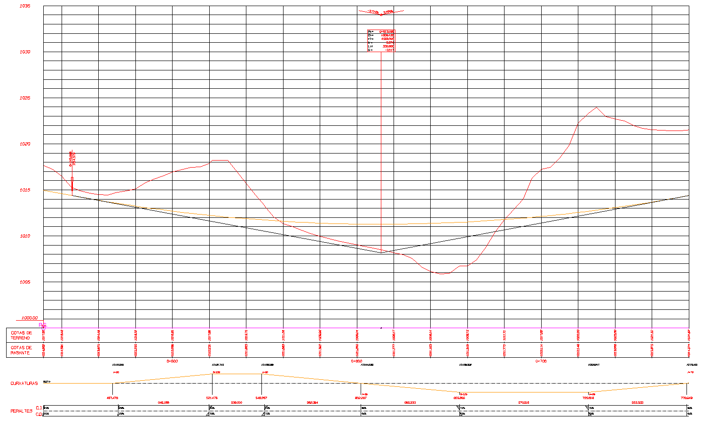 ISP21b.gui şablonunda yer alan veriler şunlardır:
BOYKESİT ŞABLONU ISP21c.gui ISP21c.gui şablonu seçildiğinde, boykesit varsayılan olarak aşağıdaki görünümde çizilecektir. 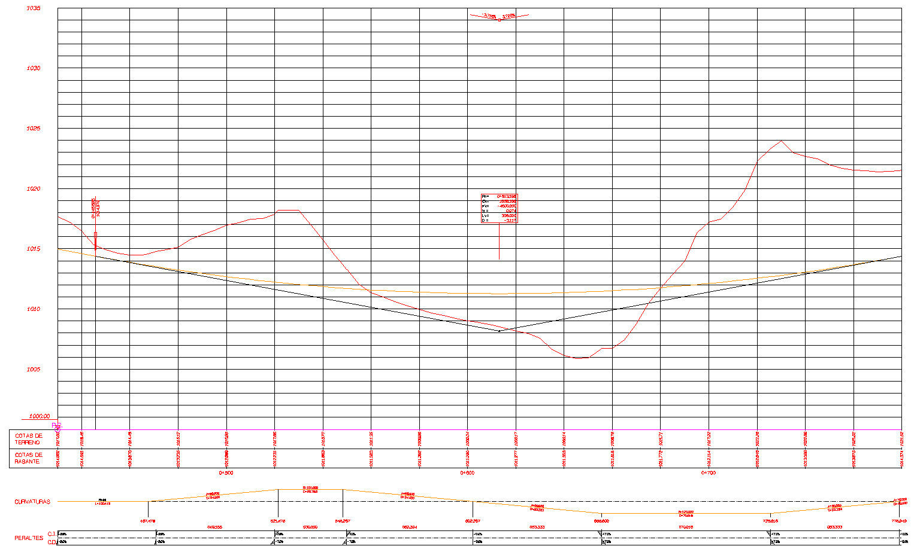 ISP21c.gui şablonunda yer alan veriler şunlardır:
BOYKESİT ŞABLONU ISP23.gui ISP23.gui şablonu seçildiğinde, boykesit varsayılan olarak aşağıdaki görünümde çizilecektir. 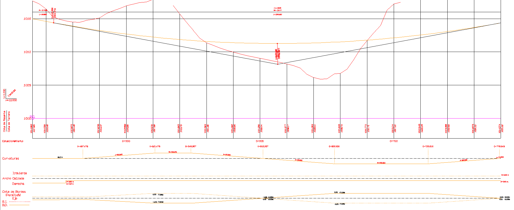 ISP23.gui şablonunda yer alan veriler şunlardır:
BOYKESİT ŞABLONU ISPOL7n.gui ISPOL7n.gui şablonu seçildiğinde, boykesit varsayılan olarak aşağıdaki görünümde çizilecektir. 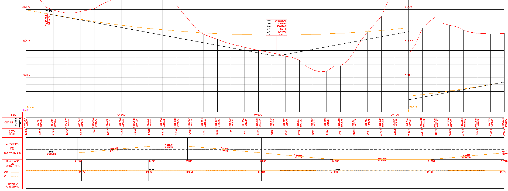 ISPOL7n.gui şablonunda yer alan veriler şunlardır:
BOYKESİT ŞABLONU PSTS.gui PSTS.gui şablonu seçildiğinde, boykesit varsayılan olarak aşağıdaki görünümde çizilecektir. 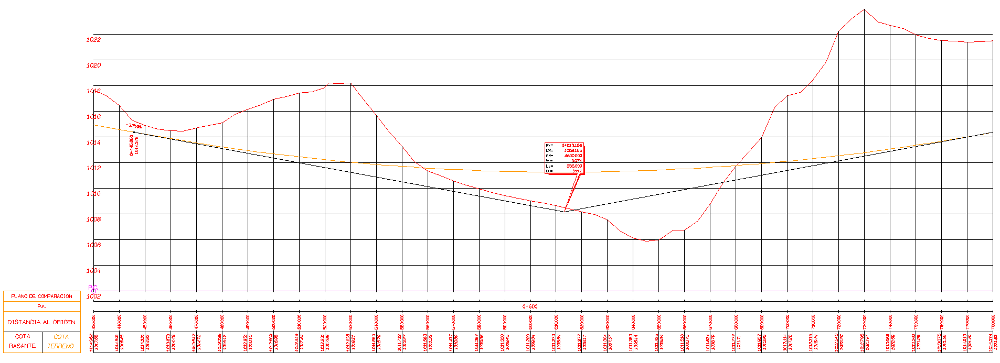 PSTS.gui şablonunda yer alan veriler şunlardır:
Boykesit çizimine ek olarak, PSTS.gui şablonu seçildiğinde, güzergahta Aliyman-Klotoid-Kurp geçişlerinin olduğu noktaları gösteren bir tablo oluşturulur. 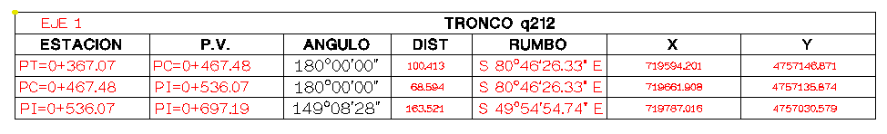 BOYKESİT ŞABLONU TABLA_ALI.gui TABLA_ALI.gui şablonu seçildiğinde, boykesit varsayılan olarak aşağıdaki görünümde çizilecektir. 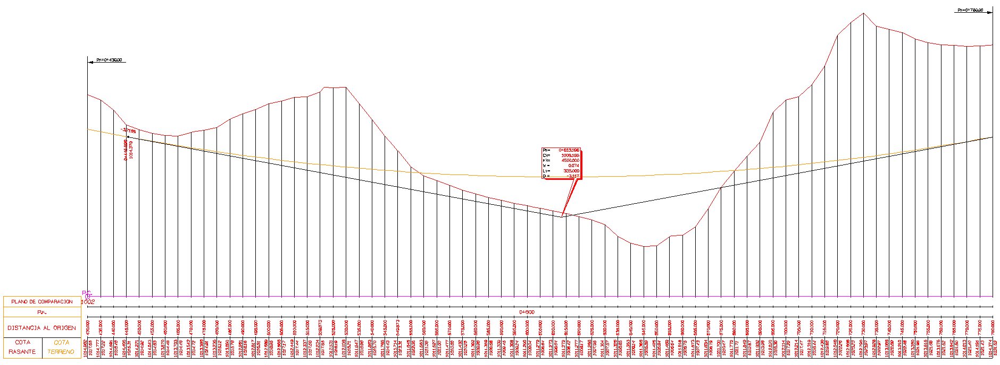 TABLA_ALI.gui şablonunda yer alan veriler şunlardır:
Boykesit çizimine ek olarak, TABLA_ALI.gui şablonu seçildiğinde, güzergahta Aliyman-Klotoid-Kurp geçişlerinin olduğu noktaları ve bunlara ilişkin bilgileri içeren bir tablo oluşturulur. 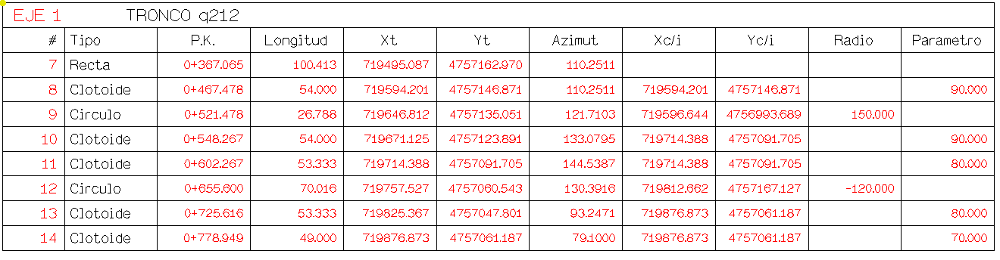 BOYKESİT ŞABLONU SCT1.gui SCT1.gui şablonu seçildiğinde, boykesit varsayılan olarak aşağıdaki görünümde çizilecektir. 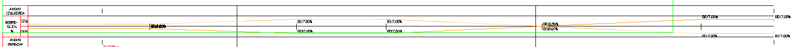 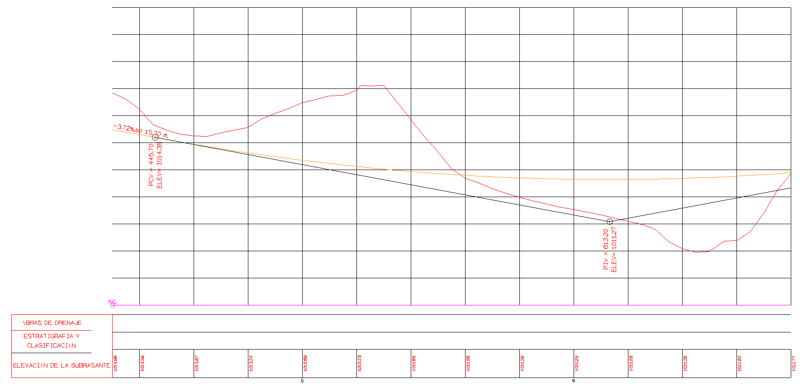 SCT1.gui şablonunda yer alan veriler şunlardır:
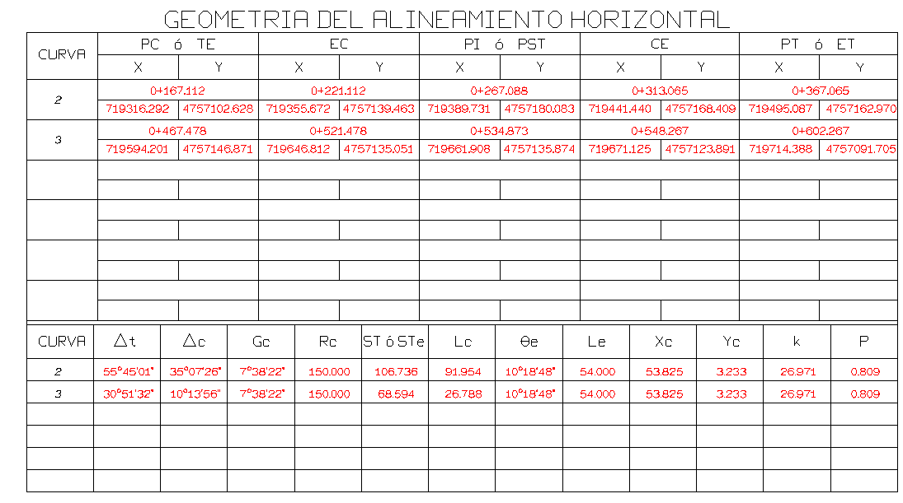 Aşağıda, duvarlı karayolu boykesitlerinin çizimi için mevcut olan farklı şablon tipleri açıklanmaktadır. BOYKESİT ŞABLONU ISP10.gui ISP10.gui şablonu seçildiğinde, boykesit varsayılan olarak aşağıdaki görünümde çizilecektir. 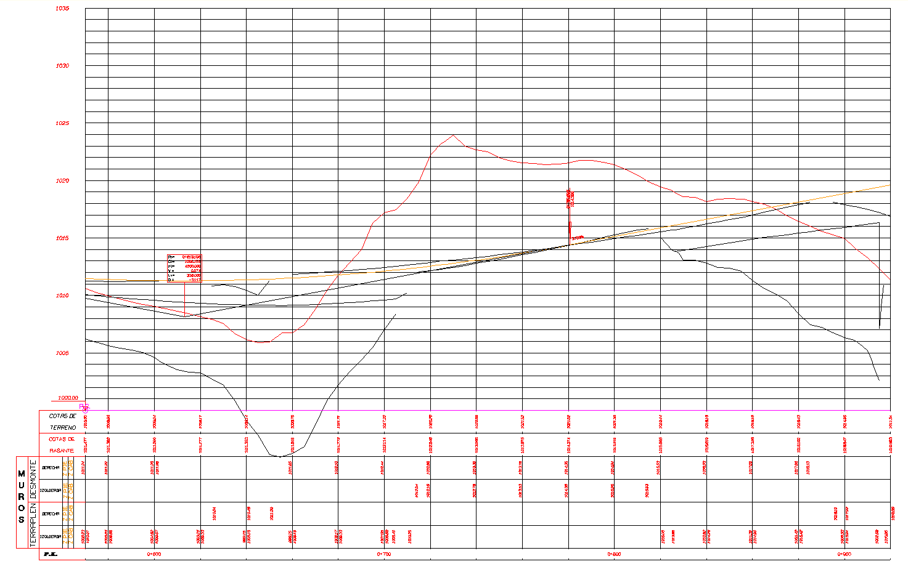 ISP10.gui şablonunda yer alan veriler şunlardır:
BOYKESİT ŞABLONU ISP13.gui ISP13.gui şablonu seçildiğinde, boykesit varsayılan olarak aşağıdaki görünümde çizilecektir. ISP13.gui şablonunda yer alan veriler şunlardır:
BOYKESİT ŞABLONU MUROS.gui MUROS.gui şablonu seçildiğinde, boykesit varsayılan olarak aşağıdaki görünümde çizilecektir. MUROS.gui şablonunda yer alan veriler şunlardır:
BOYKESİT ŞABLONU MUROS2.gui MUROS2.gui şablonu seçildiğinde, boykesit varsayılan olarak aşağıdaki görünümde çizilecektir. MUROS2.gui şablonunda yer alan veriler şunlardır:
Aşağıda, boru hattı boykesitlerinin çizimi için mevcut olan farklı şablon tipleri açıklanmaktadır. BOYKESİT ŞABLONU ISP22.gui ISP22.gui şablonu seçildiğinde, boykesit varsayılan olarak aşağıdaki görünümde çizilecektir. ISP22.gui şablonunda yer alan veriler şunlardır:
BOYKESİT ŞABLONU ISP22b.gui ISP22b.gui şablonu seçildiğinde, boykesit varsayılan olarak aşağıdaki görünümde çizilecektir. ISP22b.gui şablonunda yer alan veriler şunlardır:
BOYKESİT ŞABLONU Pozos.gui Pozos.gui şablonu seçildiğinde, boykesit varsayılan olarak aşağıdaki görünümde çizilecektir. Pozos.gui şablonunda yer alan veriler şunlardır:
BOYKESİT ŞABLONU TUBOS4.gui TUBOS4.gui şablonu seçildiğinde, boykesit varsayılan olarak aşağıdaki görünümde çizilecektir. TUBOS4.gui şablonunda yer alan veriler şunlardır:
BOYKESİT ŞABLONU TUBOS5.gui TUBOS5.gui şablonu seçildiğinde, boykesit varsayılan olarak aşağıdaki görünümde çizilecektir. TUBOS5.gui şablonunda yer alan veriler şunlardır:
BOYKESİT ŞABLONU TUBOS6.gui TUBOS6.gui şablonu seçildiğinde, boykesit varsayılan olarak aşağıdaki görünümde çizilecektir. TUBOS6.gui şablonunda yer alan veriler şunlardır:
BOYKESİT ŞABLONU TUBOS7.gui TUBOS7.gui şablonu seçildiğinde, boykesit varsayılan olarak aşağıdaki görünümde çizilecektir. TUBOS7.gui şablonunda yer alan veriler şunlardır:
BOYKESİT ŞABLONU TUBOS8.gui TUBOS8.gui şablonu seçildiğinde, boykesit varsayılan olarak aşağıdaki görünümde çizilecektir. TUBOS8.gui şablonunda yer alan veriler şunlardır:
BOYKESİT ŞABLONU TUBOSs3.gui TUBOSs3.gui şablonu seçildiğinde, boykesit varsayılan olarak aşağıdaki görünümde çizilecektir. TUBOSs3.gui şablonunda yer alan veriler şunlardır:
Aşağıda, demiryolu boykesitlerinin çizimi için mevcut olan farklı şablon tipleri açıklanmaktadır. BOYKESİT ŞABLONU Apa_Via.gui Apa_Via.gui şablonu seçildiğinde, boykesit varsayılan olarak aşağıdaki görünümde çizilecektir. Apa_Via.gui şablonunda yer alan veriler şunlardır:
BOYKESİT ŞABLONU Apa_Via2.gui Apa_Via2.gui şablonu seçildiğinde, boykesit varsayılan olarak aşağıdaki görünümde çizilecektir. Apa_Via2.gui şablonunda yer alan veriler şunlardır:
BOYKESİT ŞABLONU Apa_Via3.gui Apa_Via3.gui şablonu seçildiğinde, boykesit varsayılan olarak aşağıdaki görünümde çizilecektir. Apa_Via3.gui şablonunda yer alan veriler şunlardır:
BOYKESİT ŞABLONU FFCC02.gui FFCC02.gui şablonu seçildiğinde, boykesit varsayılan olarak aşağıdaki görünümde çizilecektir.  FFCC02.gui şablonunda yer alan veriler şunlardır:
BOYKESİT ŞABLONU RENFE2K.gui RENFE2K.gui şablonu seçildiğinde, boykesit varsayılan olarak aşağıdaki görünümde çizilecektir. RENFE2K.gui şablonunda yer alan veriler şunlardır:
|